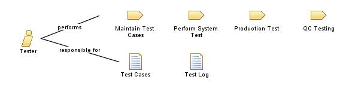

| Role: Tester |
 |
|
 |
||
| Modifies |
|
|
|---|---|---|
هذا الدور مسؤول بشكل أساسي عن تحديد نهج التنفيذ الأنسب لاختبار التطبيقات ، وتنفيذ الاختبارات الفردية ، وإعداد الاختبارات وتنفيذها ، وتسجيل النتائج ، والتحقق من تنفيذ والتعافي من أخطاء التنفيذ. يمكن تفصيل مسؤوليات المختبر على النحو التالي 1. تقييم وفهم متطلبات التطبيق. 2. إدارة طلبات الاختبار المتعددة. 3. تحديد وتصميم حالات الاختبار ومجموعات الاختبار التي تغطي جميع متطلبات النظام. 5. تقديم مدخلات الاختبار 7. تحديد وتتبع وحل وتصعيد المشكلات التي تؤثر على جدول الاختبار. 8. تنفيذ عملية الاختبار في الفريق. 10. تعيين مدى خطورة الأخطاء على أساس مدى أهمية الأعمال وتعقيدها بالتشاور مع مستخدمي الأعمال. 11. التأكد من تنفيذ حالات الاختبار وفق الجدول الزمني المتفق عليه. 12. ضمان تسجيل الأخطاء وتعقبها وفقًا لدورة حياة الاختبار المحددة. 13. ضمان جمع وتحليل مقاييس الأخطاء في جميع التطبيقات. This role is primarily responsible for identifying the most appropriate implementation approach for a given test, implementing individual tests, setting up and executing the tests, logging outcomes and verifying test execution and analyzing and recovering from execution errors. The responsibilities of the Tester can be detailed as follows 1. Evaluating and understanding application change requirements. 2. Managing multiple testing requests. 3. Identifying and designing test cases and test suites which cover all system requirements. 4. Designing test cases and test suites based on the different requirements parameters combinations. 5. Providing input to Test Team Leader on the Integration Test status. 6. Providing detailed testing effort estimation using appropriate estimation techniques. 7. Identifying, tracking, resolving, escalating issues that impact test schedule. 8. Implementing testing process in the team. 9. Involving in defining testing process at organization level. 10. Assigning severity of the bugs based on their business criticality and complexity in consultation with business users. 11. Ensuring execution of test cases in accordance with the agreed schedule. 12. Ensuring bugs are logged and tracked in accordance with the defined test life cycle. 13. Ensuring collection and analysis of bugs’ metrics across all applications. |
| Skills | المهارات والخبرات الأساسية التالية: - معرفة عامة بكافة جوانب عملية هندسة البرمجيات - خبرة في مجموعة متنوعة من جهود وتقنيات وأدوات الاختبار - معرفة المجال أو النظام أو التطبيق قيد الاختبار - خبرة نوعا ما في البرمجة أو إدارة فرق البرمجة Supported by the following basic skills and experience: - General knowledge of all aspects of the software engineering process - Experience in a wide variety of testing efforts, techniques and tools - People skills, especially diplomacy and advocacy skills - Planning and management skills - Knowledge of the domain, system or application-under-test (desirable) |
|---|
| Guidelines |
|---|